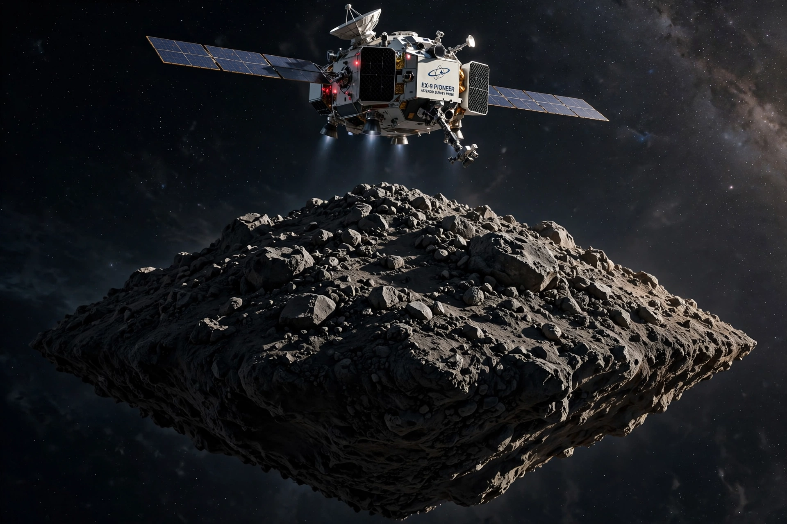

Hayabusa2
From Wikipedia, the free encyclopedia
| Hayabusa2 | |
|---|---|
| Operator | JAXA |
| Launch | 3 December 2014 |
| Target | Asteroid 162173 Ryugu |
| Sample return | 5 December 2020 (~5.4 g) |

Hayabusa2 at Ryugu (artist's concept).Hayabusa2 was a JAXA asteroid sample-return mission to the carbonaceous asteroid Ryugu, successor to the troubled but triumphant Hayabusa mission to Itokawa. Launched in 2014, it arrived at the spinning-top-shaped Ryugu in June 2018, deployed small rovers (MINERVA-II) and a German-French lander (MASCOT) that hopped on the surface, and collected samples twice — including from an artificial crater it blasted with an explosive impactor to expose pristine subsurface material.
The return capsule landed in the Australian outback in December 2020 carrying about 5.4 grams of Ryugu — black, fragile grains that analysis showed to be chemically close to the most primitive meteorites and rich in organic molecules, including amino acids and a component of vitamin B3.
Extended mission
Having dropped its capsule, Hayabusa2 flew on — as Deep Space 1 did before it — toward further asteroid encounters: a fast flyby of Torifune in 2030 and a rendezvous with the tiny, fast-spinning 1998 KY26 in 2031, testing Japan's ion-engine deep-space techniques for a second decade.
See also
OSIRIS-REx · Stardust (spacecraft) · JAXA · Tanegashima Space Center